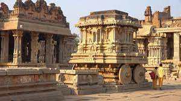
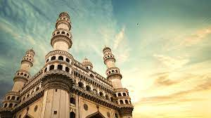
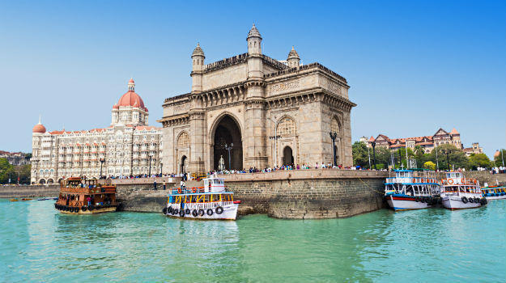

TAMIL NADU

Tamil Nadu is a state in South India. Its capital and largest city is Chennai.
Tamil Nadu lies in the southernmost part of the Indian subcontinent.
Click here to Read more...
Click here to Read more...

Karnataka is a state in South India. Originally known as the State of Mysore
it
was renamed Karnataka. Its capital and largest city is Bangalore.
Click here to Read more...
Click here to Read more...

Kerala is a state on the Malabar Coast of India.Spread over 38,863
km2
Kerala is the twenty-first largest Indian state by area.
Click here to Read more...
Click here to Read more...

Andhra Pradesh is the seventh-largest state by area covering an area of
162,975
km2 and tenth-most populous state with 49,386,799 inhabitants.
Click here to Read more...
Click here to Read more...
